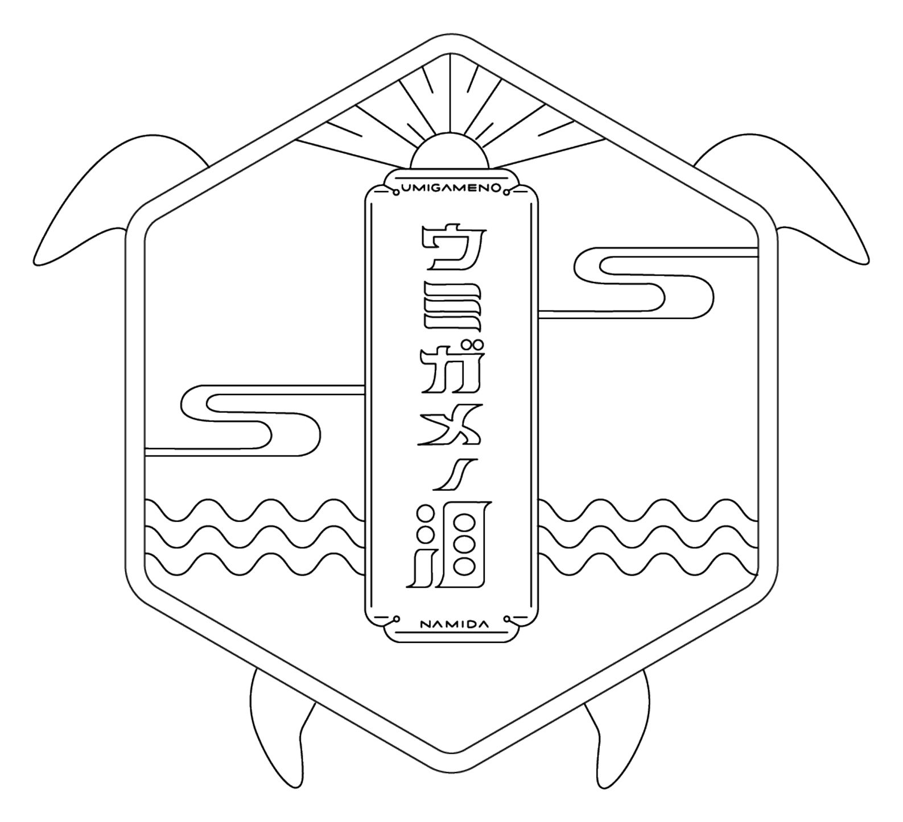
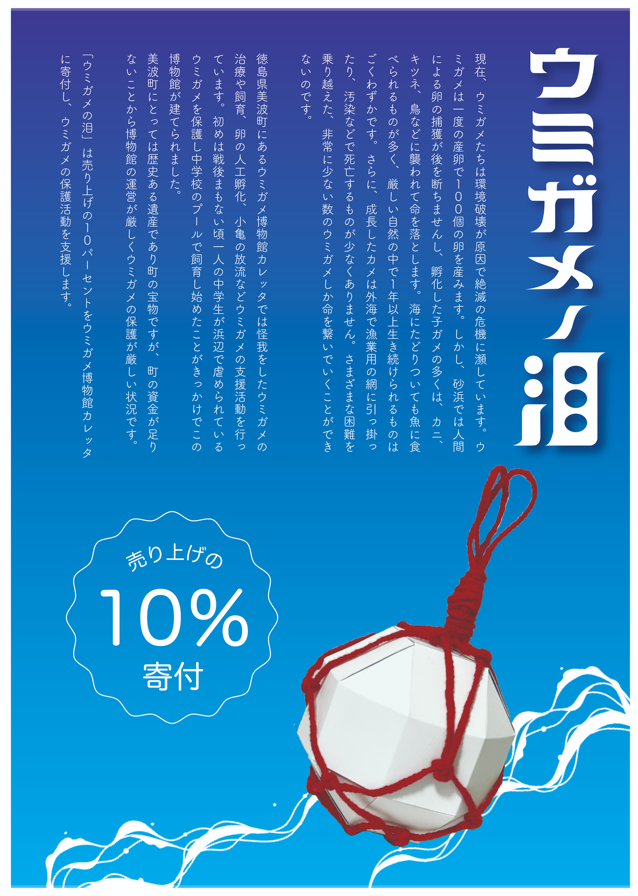
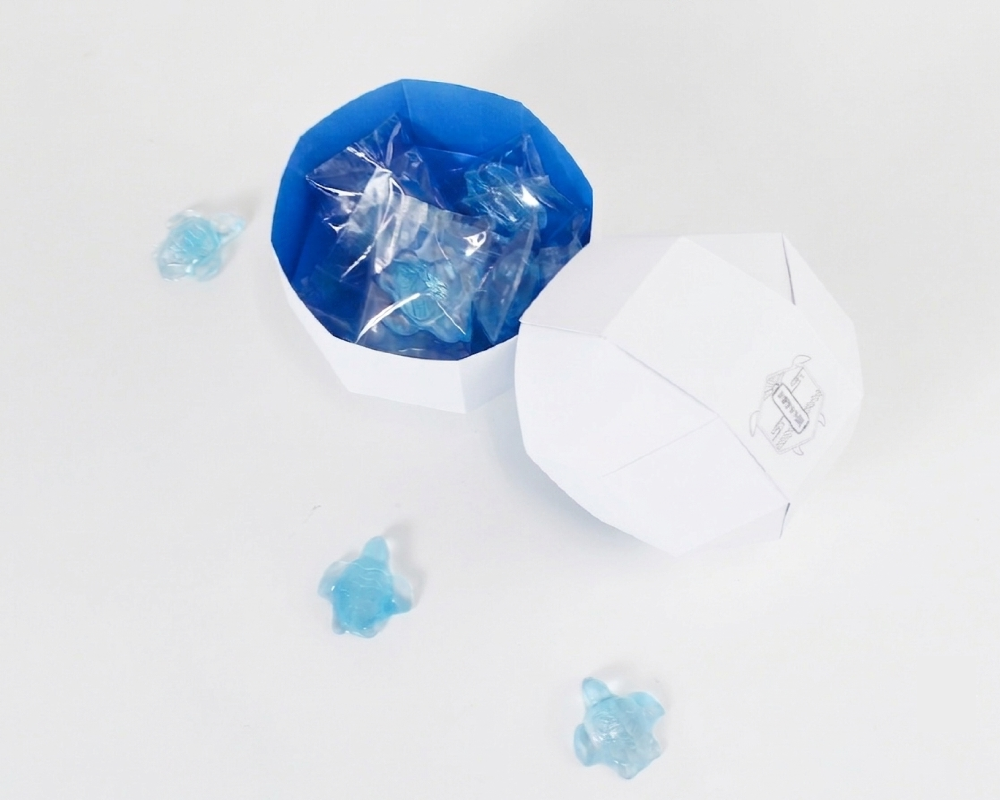
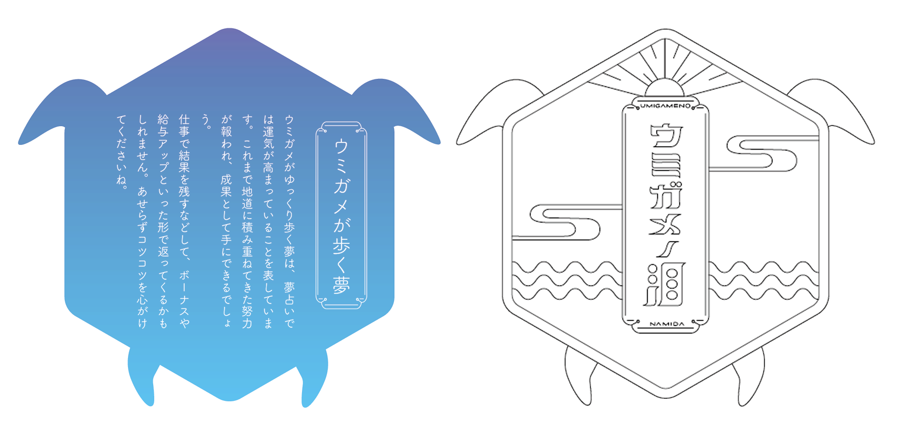
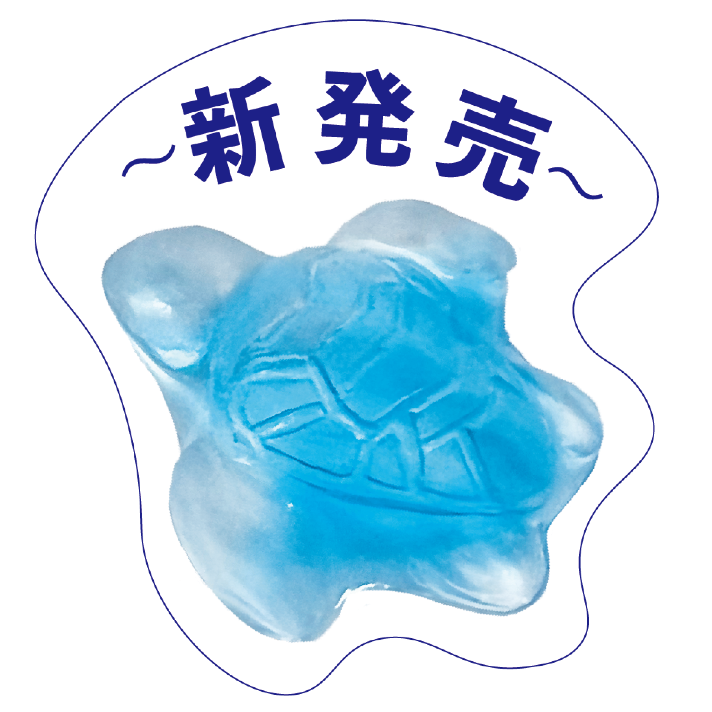

ウミガメの泪｜お土産グランプリ
「ウミガメの泪」は、絶滅危惧種であるウミガメの保護活動を支援することを 目的とした、徳島県美波町のお土産ブランドです。
商品のモチーフには小亀を採用し、海をイメージした淡い青色の塩飴としてデザイン しました。 お遍路さんや夏場の塩分補給を必要とする方にも親しまれる商品を目指しています。 売上の10%をウミガメの保護活動へ寄付する仕組みを取り入れることで、お土産を 購入することが地域や環境保全への支援につながるブランドとして企画・制作しました。
Role
- Logo Design
- Package Design
- Omikuji Card Design
- POP Design
Tools
- Illustrator
- Photoshop
- Procreate
Period
- 2022.08 – 2022.09
Category
- Branding
- Souvenir Design
01
Project Overview

02
Package Design


03
Promotional Banner

04
Omikuji Card Design

05
Pop Design
